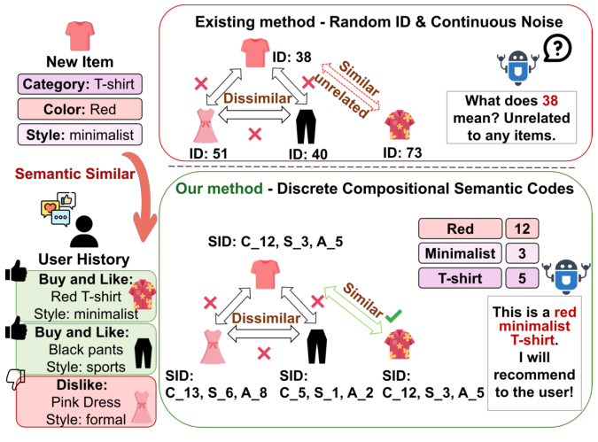

MoToRec: Sparse-Regularized Multimodal Tokenization for Cold-Start Recommendation (稀疏正则化多模态分词用于冷启动推荐)
- 会议/期刊: AAAI 2026 (Main Track)
- 作者与机构: Jialin Liu, Zhaorui Zhang, Ray C.C. Cheung (City University of Hong Kong / The Hong Kong Polytechnic University)
- 推荐链路定位: 召回（表征学习）
- 研究方向: 冷启动与长尾推荐 / 多模态推荐
- 论文原文: https://arxiv.org/abs/2602.11062v2
- 开源代码: 暂未开源
TL;DR (1分钟核心速览)
现有多模态推荐在连续高维空间做特征对齐，冷启动物品因交互稀疏而陷入"语义雾"（对齐噪声 + 表征纠缠 + OOD）。MoToRec 将多模态推荐重构为离散语义分词任务：用稀疏正则化 RQ-VAE 把视觉/文本特征编码为可组合的离散 token 序列，再以稀有度放大加权与分层多源图编码融合协同信号。在 Baby/Sports/Clothing 三个 Amazon 数据集、8:1:1 划分 + 全库排序协议下，整体 N@20 较最强多模态基线提升 8.57%–10.00%，冷启动物品集上最高提升 12.58%。
Background & Motivation (背景与核心矛盾)
- 主流范式: 以 FREEDOM、BM3、LGMRec、LPIC 为代表的图多模态推荐，在连续空间中用跨模态对比学习对齐视觉/文本/ID 表征，再经 LightGCN 传播融合。
- 前人局限: ① 连续空间对齐对噪声极度敏感——"红色 T 恤"的像素向量与文本向量映射到同一高维点本身就是一个病态任务，稀疏数据下更甚；② 冷启动物品缺乏交互锚点，连续对齐产生的表征严重偏离分布（OOD），ID 嵌入则完全无信息量。
- 核心洞察 (Key Insight): 离散码本天然具备噪声鲁棒性与组合泛化性——新物品可被表示为若干"已知语义原语"的组合（如
[颜色:红]+[风格:极简]+[品类:T恤]），从而绕开连续对齐的模糊性。 - 本文切入点: 把多模态推荐从"连续特征融合"改写为"离散语义分词"，用 RQ-VAE 生成组合语义码，并针对长尾分布设计稀有度感知优化。

Method (核心方法设计)
1. 整体框架 (Overall Architecture)
MoToRec 分三阶段闭环：① 分词阶段——视觉特征（BEiT）与文本特征（BGE）分别经模态专属 MLP 编码器投影后，由 \(N_q\)级残差量化器逐级量化，得到组合语义码；② 图编码阶段——在用户-物品图上维护视觉、文本、ID 三条解耦传播通道，各自跑 LightGCN，再经混合融合与门控残差合成最终嵌入；③ 优化阶段——BPR 排序损失 + InfoNCE 对比损失 + 加权 RQ-VAE 重建损失联合端到端训练，其中 RQ-VAE 损失按物品稀有度\(w_i\) 放大。推理时以最终嵌入点积打分。
flowchart TD
A["视觉/文本原始特征"] --> B["稀疏正则化 RQ-VAE 分词"]
B --> C["离散组合语义码"]
C --> D["三通道解耦 LightGCN 传播"]
E["ID 嵌入"] --> D
D --> F["混合融合 + 门控残差"]
F --> G["BPR 点积打分"]
H["稀有度放大权重 w_i"] --> B
H --> G2. 关键设计拆解 (Key Designs)
-
稀疏正则化 RQ-VAE 分词（核心创新）：痛点在于学到的码本易退化为纠缠表征、丧失可解释性。本文在标准 RQ-VAE 的重建项与承诺项之外，对码本使用率的批内平均激活概率 \(\hat{\rho}_j\)施加 KL 惩罚，驱使其逼近稀疏先验\(\mathrm{Bernoulli}(\rho)\)： $\(\mathcal{L}_{\text{sparse}}=\sum_{j=1}^{K}\Big(\rho\log\frac{\rho}{\hat{\rho}_j}+(1-\rho)\log\frac{1-\rho}{1-\hat{\rho}_j}\Big)\)$ 该惩罚等价于最小化码字激活间的互信息（非线性 ICA 的离散类比），迫使每个物品仅激活少量专用码字，从而得到解耦、可组合的语义原语——这正是冷启动物品"用已知概念拼装新概念"的前提。
-
自适应稀有度放大（Adaptive Rarity Amplification）：痛点在于流行度偏置使模型忽视稀有物品，而它们恰是冷启动的主体。本文以度数阈值 \(\tau\)划分冷/热物品，对\(d_i<\tau\)且\(d_i>0\) 的物品赋权： $\(w_i=\big(\log_2(d_i+2)\big)^{-1},\quad c_i=\mathbb{I}(d_i<\tau)\)$ 逆对数形式压缩度数动态范围、\(+2\) 偏移稳定小度数取值；该权重同时乘入 RQ-VAE 损失与整体目标，使分词精度与表征学习向冷启动物品倾斜。
-
分层多源图编码与融合：为避免内容信号过早污染纯协同信号，视觉、文本、ID 三通道在 \(\mathcal{G}_{ui}\)上独立传播\(L\)层（式\(\mathbf{E}^{(l+1)}=(\mathbf{D}^{-1/2}\tilde{\mathbf{A}}\mathbf{D}^{-1/2})\mathbf{E}^{(l)}\)），得到\((\mathbf{u}^v,\mathbf{i}^v)\)、\((\mathbf{u}^t,\mathbf{i}^t)\)、\((\mathbf{u}^{id},\mathbf{i}^{id})\)。跨源融合采用静态拼接与注意力动态重加权的混合策略\(\mathbf{e}^m_i=\alpha\cdot\text{CONCAT}(\mathbf{i}^v,\mathbf{i}^t)+(1-\alpha)\cdot\text{Attention}(\mathbf{i}^v,\mathbf{i}^t)\)，再与 ID 嵌入做门控残差连接。
-
训练目标与开销：总损失 \(\mathcal{L}=\mathcal{L}_{\text{BPR}}+\lambda_{cl}\mathcal{L}_{\text{CL}}+\lambda_{rq}\frac{1}{|\mathcal{B}|}\sum_{i\in\mathcal{B}}w_i\mathcal{L}^{\text{RQ-VAE}}_i+\lambda_{reg}\|\Theta\|_2^2\)，负采样沿用 BPR 的均匀负采样，对比损失用批内负样本。图传播阶段保持 LightGCN 原有效率，额外开销仅来自分词器：Sports 上每轮训练 11.33s（FREEDOM 12.2s、LGMRec 12.0s、LightGCN 6.5s），每批测试 3.8s，与高性能基线持平。
Experimental Setup & Evaluation Protocol (实验设置与评估协议)
- 数据集与预处理: 三个 Amazon 评论数据集，沿用 FREEDOM/BM3 的过滤与特征设置（BEiT 视觉特征 + BGE 文本特征）：
| 数据集 | #Users | #Items | #Interactions | 稀疏度 | 特征/场景说明 |
|---|---|---|---|---|---|
| Baby | 19,445 | 7,050 | 160,792 | 99.88% | 母婴，视觉/文本双模态 |
| Sports | 35,598 | 18,357 | 296,337 | 99.95% | 运动户外，视觉丰富 |
| Clothing | 39,387 | 23,033 | 278,677 | 99.97% | 服饰，细粒度属性强 |
- 数据划分与防穿越 (Splitting Strategy): 交互按 8:1:1 比例划分 训练/验证/测试；测试集进一步切分为 overall 与 cold-start 两组，冷启动物品定义为训练集中交互数 \(<10\)的测试物品（\(\tau=10\)）。
- 排名评测协议 (Ranking Protocol): 采用 Full-Ranking 全库未交互排序（MMRec 框架标准协议），指标为 R@10/R@20/N@10/N@20，对所有测试用户取平均。
- 对比基线与超参设置: 传统组 MF-BPR、LightGCN、SimGCL、LayerGCN；多模态组 VBPR、MMGCN、DualGNN、SLMRec、LATTICE、FREEDOM、BM3、LGMRec、LPIC。嵌入维度 \(d=64\)，Adam 优化器，GCN 层数\(L=2\)；RQ-VAE 网格搜索\(N_q\in\{4,6,8\}\)、\(K\in\{256,512,1024\}\)、\(\gamma\in\{0.01,0.05,0.1,0.2\}\)、\(\lambda_{rq}\in\{0.1,0.5,1,2\}\)、\(\lambda_{cl}\in\{0.01,0.05,0.1\}\)；早停 patience=20，监控验证集 R@20；\(t\)检验\(p\le 0.05\)。
Key Experimental Results (实验关键数据)
1. 主实验对比 (Main Results)
| 模型 | Baby R@20 | Baby N@20 | Sports R@20 | Sports N@20 | Clothing R@20 | Clothing N@20 |
|---|---|---|---|---|---|---|
| LightGCN | 0.0754 | 0.0328 | 0.0864 | 0.0387 | 0.0526 | 0.0236 |
| SimGCL | 0.0804 | 0.0350 | 0.0919 | 0.0414 | 0.0549 | 0.0244 |
| LATTICE | 0.0850 | 0.0370 | 0.0953 | 0.0421 | 0.0733 | 0.0330 |
| FREEDOM | 0.0992 | 0.0424 | 0.1089 | 0.0481 | 0.0941 | 0.0420 |
| BM3 | 0.0883 | 0.0383 | 0.0980 | 0.0438 | 0.0621 | 0.0281 |
| LGMRec | 0.0989 | 0.0430 | 0.1068 | 0.0477 | 0.0828 | 0.0371 |
| LPIC | 0.0977 | 0.0422 | 0.1113 | 0.0485 | 0.0928 | 0.0405 |
| MoToRec | 0.1077 | 0.0473 | 0.1163 | 0.0529 | 0.1014 | 0.0456 |
| Improv. (vs 最强基线) | +8.57% | +10.00% | +4.49% | +9.07% | +7.76% | +8.57% |
相对 ID-only 模型（MF-BPR/LightGCN）提升最高达 88%（Clothing N@10），相对最强多模态基线提升 4.49%–11.57%。
2. 消融实验 (Ablation Study)
| 变体 | Baby N@20 (Overall / Cold) | Sports N@20 (Overall / Cold) | Clothing N@20 (Overall / Cold) |
|---|---|---|---|
| MoToRec 完整 | 0.0473 / 0.0147 | 0.0529 / 0.0183 | 0.0456 / 0.0170 |
| w/o RQ-VAE | 0.0398 / 0.0092 | 0.0422 / 0.0115 | 0.0362 / 0.0097 |
| w/o ARA | 0.0437 / 0.0111 | 0.0466 / 0.0139 | 0.0397 / 0.0118 |
| w/o Sparsity | 0.0430 / 0.0109 | 0.0455 / 0.0137 | 0.0389 / 0.0116 |
| w/o CL | 0.0455 / 0.0118 | 0.0515 / 0.0153 | 0.0438 / 0.0129 |
| w/o HF | 0.0449 / 0.0120 | 0.0468 / 0.0150 | 0.0401 / 0.0127 |
| w/o HGE | 0.0438 / 0.0117 | 0.0489 / 0.0146 | 0.0407 / 0.0124 |
3. 关键实验发现 (Key Findings)
- 离散分词是冷启动增益的主引擎：移除整个 RQ-VAE 后冷启动 N@20 从 0.0147 跌至 0.0092（Baby，−37%）、0.0183 跌至 0.0115（Sports，−37%），跌幅远超其他组件，直接验证"离散组合码优于连续对齐"的核心论点。
- 稀疏正则化对冷启动的边际价值高于整体性能：w/o Sparsity 在 Baby 整体 N@20 仅降 9.1%（0.0473→0.0430），但冷启动降 25.9%（0.0147→0.0109），说明解耦语义原语主要服务于新物品的组合泛化；超参分析进一步显示冷启动结果对 \(\gamma\) 偏离高度敏感，需精确校准分词器。
- 稀有度放大与融合策略互补：w/o ARA 冷启动 N@20 在三个数据集上分别降 24.5%/24.0%/30.6%，与 w/o HF（−18.4%/−18.0%/−25.3%）量级相当，表明"信号放大"与"信号融合"两条路径缺一不可；t-SNE 可视化显示完整模型的冷启动物品（红点）不再孤立，而是嵌入语义邻域内。
Highlights & Limitations (亮点、对比与审稿批判)
- 与代表作对比 (vs. Prior Work): 相较 FREEDOM/BM3 的跨模态对比对齐，本文根本性地把战场从连续空间搬到离散码本，用组合语义码替代噪声敏感的点对点对齐；相较 VQ-Rec 等将 VQ 用于序列生成或嵌入压缩的工作，本文首次将离散分词用于多模态内容的解耦表征学习以攻克冷启动；相较 MeLU 等元学习少样本方案，本文面向严格零交互场景。
- 可迁移亮点: ① 稀疏 KL 正则（Bernoulli 先验）作为码本解耦的通用正则项，可迁移至任何 RQ-VAE/VQ 表征学习任务；② 逆对数稀有度加权 \(w_i\) 实现简单、无需额外前向，可直接插入任意长尾推荐训练目标。
- 审稿级局限批判: ① 冷启动定义依赖训练集交互数 \(<10\)的阈值，未做严格零交互（strict zero-shot）划分，与真实上新场景仍有距离；② 分词器带来约 74% 的训练时间开销，且\(N_q\)、\(K\)、\(\gamma\)在三个数据集上最优值不一致（Baby 偏好\(\gamma=0.05,K=512\)，Clothing 偏好\(\gamma=0.01,K=1024\)），跨域部署需重新调参；③ 未与 LLM 特征提取类方法做直接对比，对"语义雾"的批判缺少同赛道实证。
Rating (四维评分)
- 方法创新性 (Novelty): ⭐⭐⭐⭐ （将多模态推荐重构为离散语义分词，稀疏 KL 正则具备互信息最小化的理论支撑，视角新颖）
- 评估协议与实验扎实度 (Protocol & Experiments): ⭐⭐⭐⭐ （三数据集 + 13 个基线 + 整体/冷启动双场景 + 完整消融与效率分析，但冷启动划分未达 strict zero-shot）
- 写作与数学规范度 (Clarity & Rigor): ⭐⭐⭐⭐ （公式与符号定义清晰，RQ-VAE 与稀疏正则推导完整，超参敏感性分析充分）
- 工业落地与复现价值 (Industrial & Practical Value): ⭐⭐⭐⭐ （图传播零额外开销、推理 3.8s/batch 与基线持平，但代码未开源且分词器训练开销需权衡）